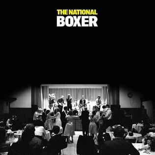
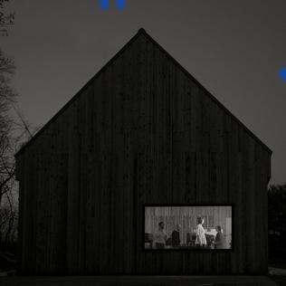

Sample services
If you partner with my firm, The National Consulting, the Taylor Swift fans in your life can benefit from customized recommendations and advice for any question you could possibly think of related to this legendary band.
Below are sample advisory services I provide, and further details are available upon inquiry at
james.chang@kellogg.northwestern.edu
.
Album Recommendations (in rank order)
Taylor Swift fans may feel overwhelmed when exploring The National's titanic discovery. Let me be your Sherpa through their musical journey.
If you enjoyed Folklore, I believe you will like the below albums. But I am available for custom album recs, song recs, and even curated playlists for my clients.
- Boxer

This album includes thoughtful, midtempo ruminations on lost love that will be familiar to Swift fans.
- Sleep Well Beast

The album cover features the barn / recording studio where Aaron Dessner produced Folklore and Evermore
Merchandise Recommendation
Taylor Swift fans will want to rep National merch after they discover how much they love this band and will need guidance. I provide one sample of my guidance.
This beanie ($20) is useful for pensive strolls through the woods during the fall & winter, which is the ideal environment to listen to Folklore and Evermore .